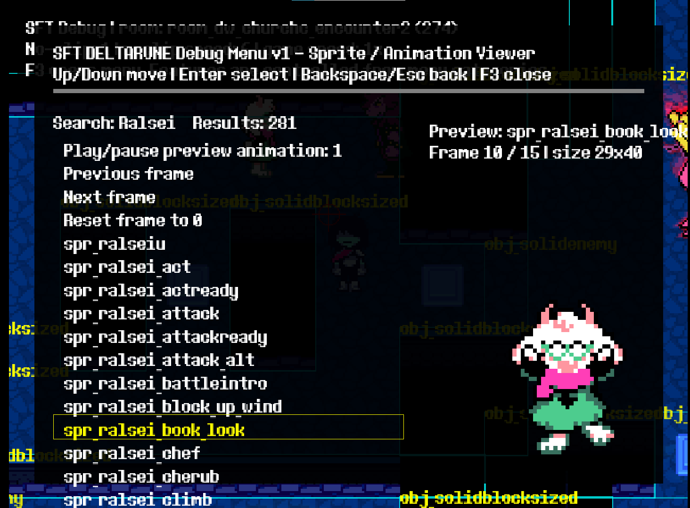
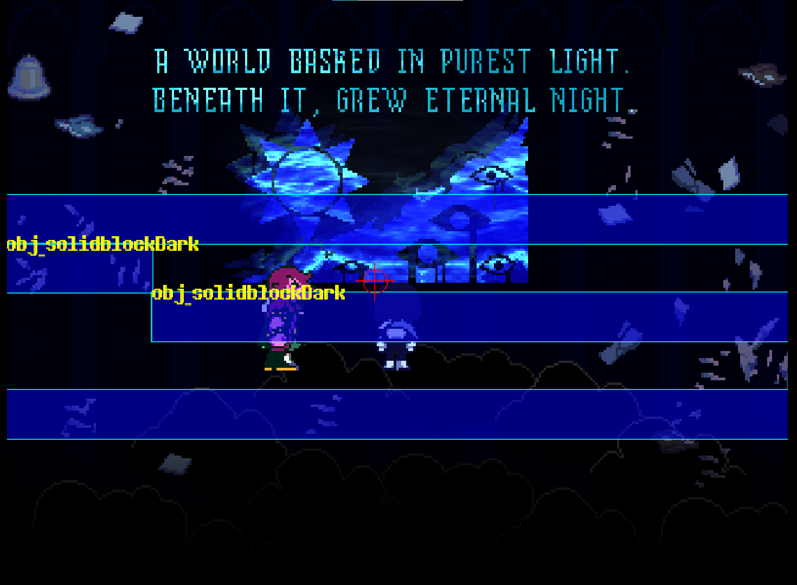
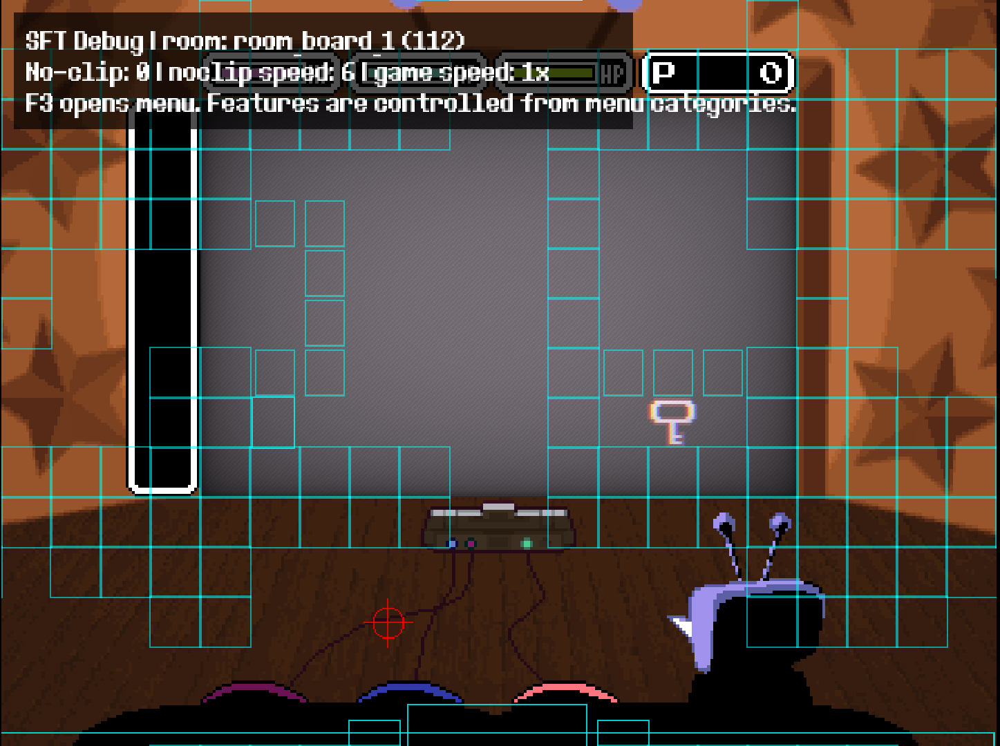
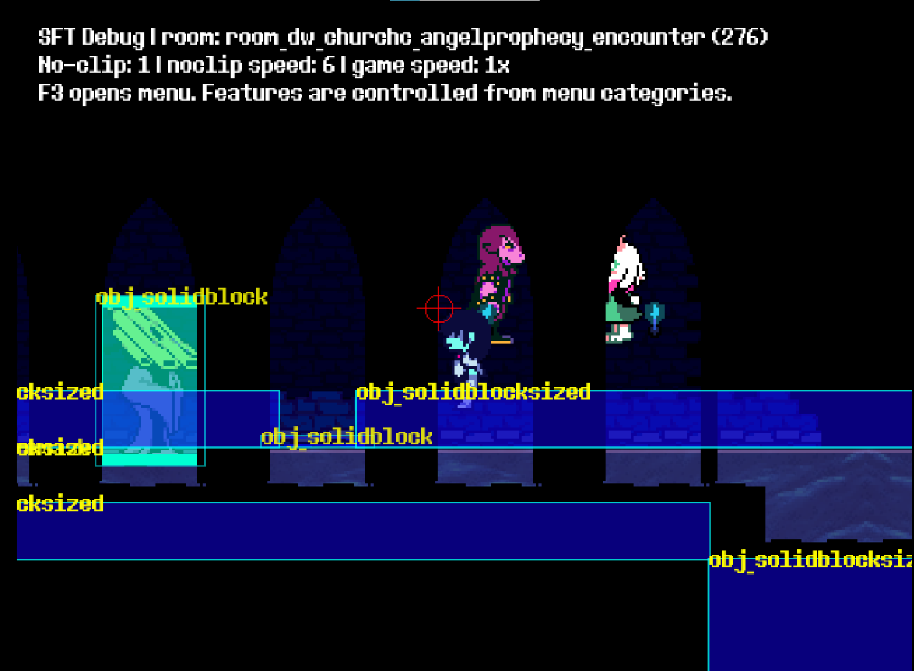

▣Room Select
Browse, search, and warp to rooms in the currently patched chapter.
A fan-made UMT CSX debugging menu for DELTARUNE Chapters 1–5
Browse, search, and warp to rooms in the currently patched chapter.
Draw collision boxes, object labels, room bounds, player markers, and layer visibility tests.
Search/play music and SFX from the loaded chapter, with stop/reset helpers.
Search sprites, preview animation frames, frame forward/back, and inspect sprite sizes.
Move through walls and objects with adjustable no-clip speed.
Safe generic battle/test room warps and runtime helpers for quick testing.
DELTARUNE_Debug_Menu_v1.csx.Some behavior can vary per chapter because each chapter has its own object/script/resource layout.
 DDM Menu1Menu / Categories
DDM Menu1Menu / Categories DDM Menu2Menu / Categories
DDM Menu2Menu / Categories DDM Menu3Menu / Categories
DDM Menu3Menu / Categories DDM Menu4Menu / Categories
DDM Menu4Menu / Categories DDM Menu5Menu / Categories
DDM Menu5Menu / Categories DDM Menu6Menu / Categories
DDM Menu6Menu / Categories DDM Menu7Menu / Categories
DDM Menu7Menu / Categories DDM Menu8Menu / Categories
DDM Menu8Menu / Categories DDM Menu9Menu / Categories
DDM Menu9Menu / Categories Spr 1Sprite Viewer
Spr 1Sprite Viewer
Spr 2Sprite Viewer Vis Act1Visual / Collision
Vis Act1Visual / Collision
Vis Act2Visual / Collision
Vis Act3Visual / Collision
Vis Act5Visual / Collision